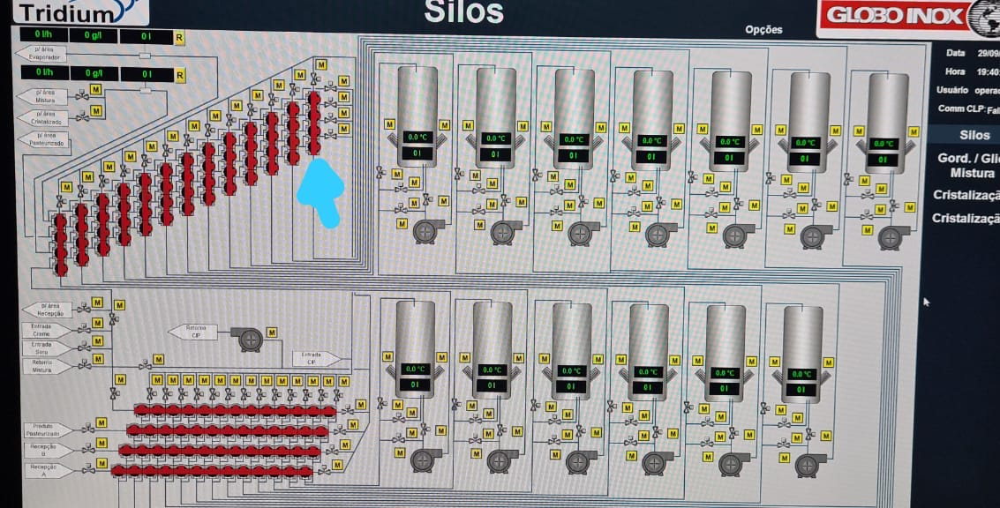
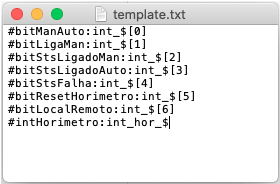
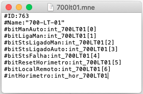

Simple tool that generate tags for tridium's supervisory system.
The Problem
In the projects they build, Tridium include a
supervisory system.
For each component in the project they need to create a .mne file with it's corresponding
name and containing the variables it will use.
Not a big problem in smaller projects, I was asked for help once when they had to deliver a
project with around 700 components. They said they would take days creating the ~700
configuration files.

Supervisory system screenshot: each red dot is a component that need configuration
The Solution
I built a simple tool that, given a .csv file containing a list of component names and
corresponding id, generates the configuration files automatically according to an user defined
template.

Template file example

Generated file example
Technical Information
I choosed Python as the programming language because I tought the solution could be achieved
in a simple script, and that it would save me time instead of configurating a java project.
For ease of use, I decided to make a visual interface with Tkinter and distributed the project
as an .exe file (using pyinstaller).
Results
Tridium now uses this tool to generate the configuration files saving time and labor costs
and focusing on making the things they excel at and get the most value of.